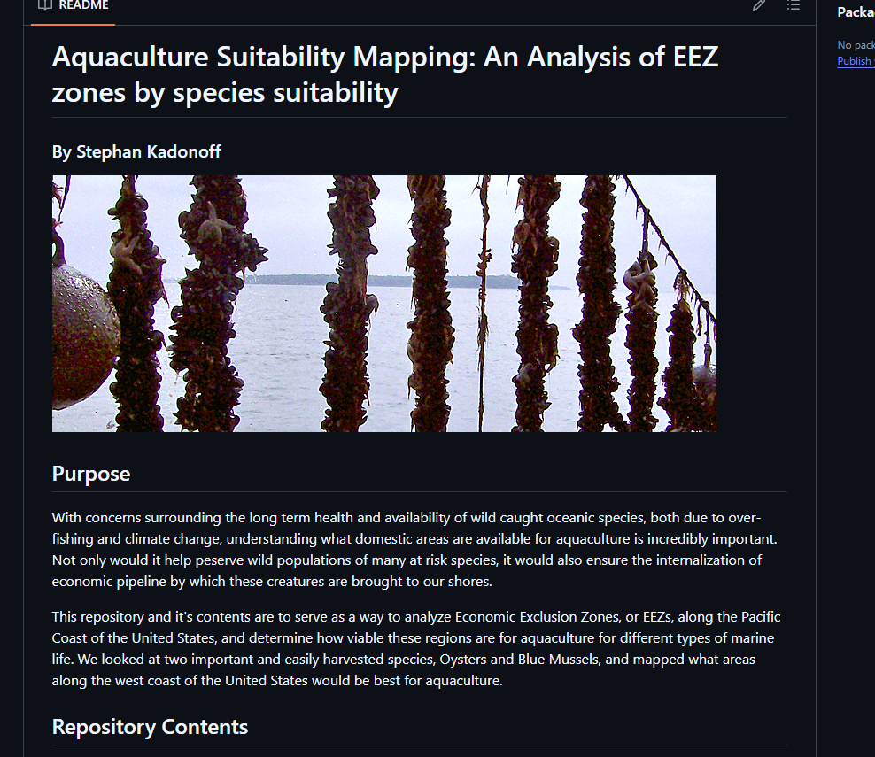
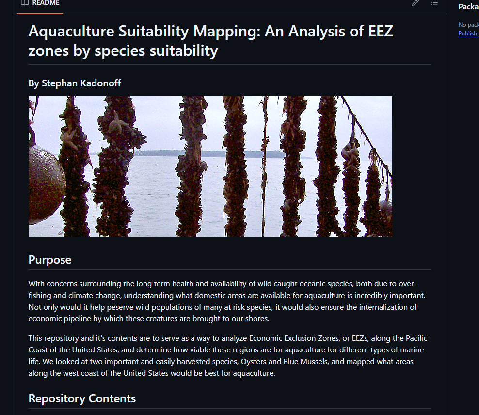
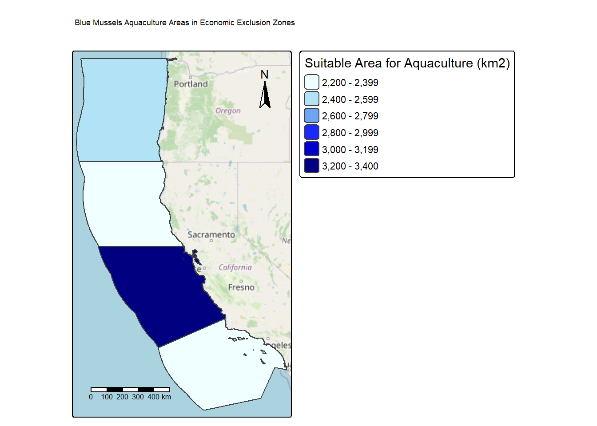

#Read in relevant libraries
#| message: false
#| warning: false
library(terra) # raster handling
library(tidyverse)
library(kableExtra)
library(here)
library(raster)
library(tmap) # map making
library(kableExtra) # table formatting
library(spData) # spatial data
library(spDataLarge) # spatial data
library(geodata) # spatial data
library(stars)Aquaculture Mapping
Github Screenshots
 
 
Section 1: Importing Data and Initial Exploration
#read in data
#| message: false
#| warning: false
wc_eez <- st_read(here("data", "wc_regions_clean.shp"))Reading layer `wc_regions_clean' from data source
`C:\Users\kadon\OneDrive\Documents\MEDS\EDS-223\Homework\HW4\eds223-hw4\data\wc_regions_clean.shp'
using driver `ESRI Shapefile'
Simple feature collection with 5 features and 5 fields
Geometry type: MULTIPOLYGON
Dimension: XY
Bounding box: xmin: -129.1635 ymin: 30.542 xmax: -117.097 ymax: 49.00031
Geodetic CRS: WGS 84bathymetry <- rast(here("data", "depth.tif"))
sst_2008 <- rast(here("data", "average_annual_sst_2008.tif"))
sst_2009 <- rast(here("data", "average_annual_sst_2009.tif"))
sst_2010 <- rast(here("data", "average_annual_sst_2010.tif"))
sst_2011 <- rast(here("data", "average_annual_sst_2011.tif"))
sst_2012 <- rast(here("data", "average_annual_sst_2012.tif"))
#stack the sea surface temp rasters, and then take the mean
sst_stack <- c(sst_2008,
sst_2009,
sst_2010,
sst_2011,
sst_2012)
sst_stack_mean <- mean(sst_stack)#check the CRSs
crs(wc_eez)[1] "GEOGCRS[\"WGS 84\",\n DATUM[\"World Geodetic System 1984\",\n ELLIPSOID[\"WGS 84\",6378137,298.257223563,\n LENGTHUNIT[\"metre\",1]]],\n PRIMEM[\"Greenwich\",0,\n ANGLEUNIT[\"degree\",0.0174532925199433]],\n CS[ellipsoidal,2],\n AXIS[\"geodetic latitude (Lat)\",north,\n ORDER[1],\n ANGLEUNIT[\"degree\",0.0174532925199433]],\n AXIS[\"geodetic longitude (Lon)\",east,\n ORDER[2],\n ANGLEUNIT[\"degree\",0.0174532925199433]],\n ID[\"EPSG\",4326]]"crs(bathymetry)[1] "GEOGCRS[\"WGS 84\",\n ENSEMBLE[\"World Geodetic System 1984 ensemble\",\n MEMBER[\"World Geodetic System 1984 (Transit)\"],\n MEMBER[\"World Geodetic System 1984 (G730)\"],\n MEMBER[\"World Geodetic System 1984 (G873)\"],\n MEMBER[\"World Geodetic System 1984 (G1150)\"],\n MEMBER[\"World Geodetic System 1984 (G1674)\"],\n MEMBER[\"World Geodetic System 1984 (G1762)\"],\n MEMBER[\"World Geodetic System 1984 (G2139)\"],\n MEMBER[\"World Geodetic System 1984 (G2296)\"],\n ELLIPSOID[\"WGS 84\",6378137,298.257223563,\n LENGTHUNIT[\"metre\",1]],\n ENSEMBLEACCURACY[2.0]],\n PRIMEM[\"Greenwich\",0,\n ANGLEUNIT[\"degree\",0.0174532925199433]],\n CS[ellipsoidal,2],\n AXIS[\"geodetic latitude (Lat)\",north,\n ORDER[1],\n ANGLEUNIT[\"degree\",0.0174532925199433]],\n AXIS[\"geodetic longitude (Lon)\",east,\n ORDER[2],\n ANGLEUNIT[\"degree\",0.0174532925199433]],\n USAGE[\n SCOPE[\"Horizontal component of 3D system.\"],\n AREA[\"World.\"],\n BBOX[-90,-180,90,180]],\n ID[\"EPSG\",4326]]"crs(sst_2008)[1] "GEOGCRS[\"WGS 84\",\n DATUM[\"unknown\",\n ELLIPSOID[\"WGS84\",6378137,298.257223563,\n LENGTHUNIT[\"metre\",1,\n ID[\"EPSG\",9001]]]],\n PRIMEM[\"Greenwich\",0,\n ANGLEUNIT[\"degree\",0.0174532925199433,\n ID[\"EPSG\",9122]]],\n CS[ellipsoidal,2],\n AXIS[\"latitude\",north,\n ORDER[1],\n ANGLEUNIT[\"degree\",0.0174532925199433,\n ID[\"EPSG\",9122]]],\n AXIS[\"longitude\",east,\n ORDER[2],\n ANGLEUNIT[\"degree\",0.0174532925199433,\n ID[\"EPSG\",9122]]]]"#check to make sure the crs match
if(st_crs(wc_eez) == st_crs(bathymetry) &
st_crs(bathymetry) == st_crs(sst_2008)) {
message("Keep it going! The CRSs match!")
} else {
warning("WOAHHHH There! The CRSs do not match!")
}One thing to note is that zone 5, the northern most zone, has been included, but we will want to remove it since it includes geographic areas outside of the United States.
Section 2: Process Data
# find the Celsius value, as the stack is currently in Kelvin
sst_celsius <- (sst_stack_mean - 273.15)
sst_celsiusclass : SpatRaster
size : 480, 408, 1 (nrow, ncol, nlyr)
resolution : 0.04166185, 0.04165702 (x, y)
extent : -131.9848, -114.9867, 29.99305, 49.98842 (xmin, xmax, ymin, ymax)
coord. ref. : lon/lat WGS 84
source(s) : memory
name : mean
min value : 8.18400
max value : 28.04978 #create matrices for the oysters
oyster_temp_matrix <- matrix(c(-Inf, 11, 0,
11, 30, 1,
30, Inf, 0),
nrow = 3,
byrow = TRUE)
oyster_depth_matrix <- matrix(c(-Inf, -70, 0,
-70, 0, 1,
0, Inf, 0),
nrow = 3,
byrow = TRUE)
# create matrices for the mussels
mussel_temp_matrix <- matrix(c(-Inf, 4.5, 0,
4.5, 16, 1,
16, Inf, 0),
nrow = 3,
byrow = TRUE)
mussel_depth_matrix <- matrix(c(-Inf, -60, 0,
-60, 0, 1,
0, Inf, 0),
nrow = 3,
byrow = TRUE)
#crop depth raster to match the exten of the SST raster
bathymetry_cropped <- crop(bathymetry, sst_stack_mean)
#resample the cropped depth data
bathymetry_resample <- resample(bathymetry_cropped, sst_stack_mean, method = "near")
#match the crs of the new resampled object
crs(bathymetry_resample) <- crs(sst_stack_mean)
#stack the resampled bathymetry object w/ the celsius formatted sst layer.
depth_temp_stack <- c(bathymetry_resample, sst_celsius)Section 3: Find Suitable Locations
To find suitable locations for marine aquaculture, we’ll need to find locations that are suitable in terms of both SST and depth.
reclassify SST and depth data into locations that are suitable for oysters
- hint: set suitable values to
1and unsuitable values to0
- hint: set suitable values to
find locations that satisfy both SST and depth conditions
#reclassify the celcius corrected sst object w/ the oyster temperature range matrix
reclass_oyster_temp <- classify(sst_celsius, oyster_temp_matrix)
#reclassify the celsius corrected sst object w/ the oyster depth range matrix
reclass_oyster_depth <- classify(bathymetry_resample, oyster_depth_matrix)
#find suitable locations which meet the depth and temp parameters
#use lapp() to find suitable locations
suitibility_function <- function(x, y) {
return(x * y)
}
oyster_suitable_locs <- lapp(c(reclass_oyster_temp, reclass_oyster_depth), suitibility_function)We have successfully found the areas which meet both the depth and temperature parameters. Now we need to isolate them based on the areas found in the wc_eez object.
# vectorize the wc_eez dataframe for cropping and mapping
wc_eez_vectorized <- vect(wc_eez)# utilize the crop function to find the areas where oyster suitibility matches the wc_eez zones
oysters_eez <- crop(oyster_suitable_locs, wc_eez_vectorized)
plot(oysters_eez)
#find the area, in kms, where oyster suitibility is cropped with the wc_eez, then join it with the oysters_eez object
oysters_area <- cellSize(oysters_eez, unit = "km")
oysters_eez_area <- oysters_eez * oysters_area
# rasterize the above object based on the rgn_id column from the original wc_eez dataframe
oysters_eez_raster <- rasterize(wc_eez_vectorized, oysters_eez_area, field = "rgn_id")
plot(oysters_eez_raster)
#find the suitable area per EEZ zone
suitibility_area_eez <- zonal(oysters_eez_area,
oysters_eez_raster,
fun = "sum",
na.rm = TRUE)
# join the suitable areas data w/ the original wc_eez object, and filter out zone 5 since much of the area is outside of the US and re-name lyr1 column.
oyster_eez_zones <- wc_eez %>%
filter(rgn_id != 5) %>%
left_join(suitibility_area_eez, by = "rgn_id") %>%
rename(suitable_area_km2 = lyr1)
# create a kable table
oyster_eez_zones_table <- oyster_eez_zones %>%
kable() %>%
kable_classic()
oyster_eez_zones_table| rgn | rgn_key | area_m2 | rgn_id | area_km2 | suitable_area_km2 | geometry |
|---|---|---|---|---|---|---|
| Oregon | OR | 179994061293 | 1 | 179994.1 | 1074.2720 | MULTIPOLYGON (((-123.4318 4... |
| Northern California | CA-N | 164378809215 | 2 | 164378.8 | 178.0268 | MULTIPOLYGON (((-124.2102 4... |
| Central California | CA-C | 202738329147 | 3 | 202738.3 | 4069.8766 | MULTIPOLYGON (((-122.9928 3... |
| Southern California | CA-S | 206860777840 | 4 | 206860.8 | 3757.2849 | MULTIPOLYGON (((-120.6505 3... |
# create final oyster map
tm_shape(oyster_eez_zones) +
tm_polygons(
fill = "suitable_area_km2",
fill.scale = tm_scale(
values = c("yellow3","green4","navyblue","skyblue")),
fill.legend = tm_legend(title = "EEZ Zones")
) +
tm_scalebar(position = c("left", "bottom")) +
tm_compass(position = c("right", "top")) +
tm_basemap("OpenStreetMap") +
tm_title("Oyster Aquaculture Areas in Economic Exclusion Zones")
Recreate above workflow as a function, and then utilize for mussels
species_suitibility_function <- function(min_temp, max_temp,
min_depth, max_depth,
species_name) {
# Create generalized matrices
temp_matrix <- matrix(c(-Inf, min_temp, 0,
min_temp, max_temp, 1,
max_temp, Inf, 0),
nrow = 3,
byrow = TRUE)
depth_matrix <- matrix(c(-Inf, min_depth, 0,
min_depth, max_depth, 1,
max_depth, Inf, 0),
nrow = 3,
byrow = TRUE)
# reclassify raster layers with the matrices above
reclass_temp <- classify(sst_celsius, temp_matrix)
reclass_depth <- classify(bathymetry_resample, depth_matrix)
suitability_raster <- lapp(c(reclass_temp, reclass_depth),
fun = function (x, y) x * y)
# vectorize the wc eez zones
wc_eez_vect <- vect(wc_eez)
# Crop to the EEZ zones
suitability_crop <- crop(suitability_raster, wc_eez_vect)
# find the suitable areas in KM
cell_area <- cellSize(suitability_crop, unit = "km")
suitable_area <- suitability_crop * cell_area
# rasterize the the eez vector with suitability area
eez_raster <- rasterize(wc_eez_vect, suitable_area, field = "rgn_id")
# find the sum of suitable area per zone
suitability_area_df <- zonal(suitable_area,
eez_raster,
fun = "sum",
na.rm = TRUE)
# join the suitable areas dataframe with the west coast economic exclusion zone shapefile, while filtering out the zone that contains parts of Canada
wc_eez_zones <- wc_eez %>%
filter(rgn_id != 5) %>%
left_join(suitability_area_df, by = "rgn_id") %>%
rename(suitable_area_km2 = lyr1)
# create a kable table
wc_eez_zones_table <- wc_eez %>%
kable() %>%
kable_classic()
# Final Map
map <- tm_shape(wc_eez_zones) +
tm_polygons(
fill = "suitable_area_km2",
fill.scale = tm_scale(
values = c("#F0FFFF","#89CFF0","#0000FF","navyblue")),
fill.legend = tm_legend(title = "Suitable Area for Aquaculture (km2)")
) +
tm_scalebar(position = c("left", "bottom")) +
tm_basemap("OpenStreetMap") +
tm_compass(position = c("right", "top")) +
tm_title(paste(species_name, "Aquaculture Areas in Economic Exclusion Zones"))
return(map)
}Now that we have the function developed, we can apply the parameters found within the SeaLifeBase website for Blue Mussels. This will provide a map detailing the quantity of suitable area per exclusion zone.
species_suitibility_function(min_temp = 4.5,
max_temp = 16,
min_depth = -60,
max_depth = 0,
species_name = "Blue Mussels")
Section 3 Written Reflection
This analysis provided a better understanding of the areas along the west coast of the United States that may have the best opportunities for aquaculture practices for two of the most common species that can be harvested along much of the seaboard. Besides the two species, Oysters and Blue Mussels, which we looked at, this same function can be utilized for other species. Now, as long as we can provide the parameters for depth and temperature, this function can be utilized for any number of aquaculture practices.
I did find it somewhat interesting how little area there was that was habitable, but I quickly realized much of that had to do with the depth at sea. I wonder if there would be a way to create floating lines or cages which could be a way to grow mussels or oysters ins shallower waters abover open ocean.